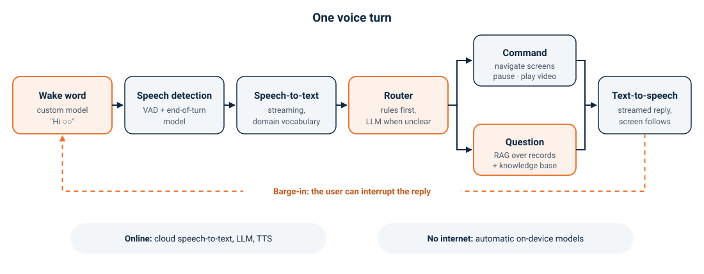

AI Voice Coaching Agent
A hands-free AI voice coach for a Taekwondo coaching system.


Overview
Students practising poomsae had to stop, walk back to the screen and touch it to pause, retry or read their feedback, which broke their practice. Touch menus also could not answer questions such as "Which movement did I do worst?"
I built a voice coach that listens from a few metres away. Users control the whole app by voice and ask about their own training records and Taekwondo knowledge. The coach answers by voice while the screen follows what it says.
Voice Pipeline
- Designed a real-time pipeline (wake word → speech detection → speech-to-text → routing → LLM/RAG → text-to-speech) that runs in the background and reports its state to the UI.
- Trained a custom on-device wake-word model for the phrase "Hi ○○", so no cloud wake-word service is needed.
- Detects the end of a sentence with voice activity detection plus an end-of-turn model, so users can pause mid-sentence without being cut off.
- Barge-in: users can interrupt the coach mid-sentence. Echo cancellation (WebRTC AEC3) removes the coach's own voice from the microphone so the user is still heard.
- Online by default with cloud speech and LLM services; switches automatically to on-device models (speech-to-text, LLM, text-to-speech) when there is no internet.
LLM & RAG
- Rules-first routing: common commands are matched instantly by rules, and only unclear sentences go to the LLM.
- RAG coaching over each user's own training records and a Taekwondo knowledge base (competition rules, curriculum, form guides and a terminology glossary). Answers are grounded in the retrieved documents; the coach asks back when a question is unclear and handles follow-up questions.
Highlights
- At login, the coach reviews the user's sessions and greets them with a personalised recommendation for what to practise next.
- A typed chat panel that uses the same question-answering engine.
At a Glance
- Role AI Developer, responsible for the voice agent end to end
- Period Nov 2025 – Present
- Platform Windows app (Python, PySide6/QML)
- Tech Stack